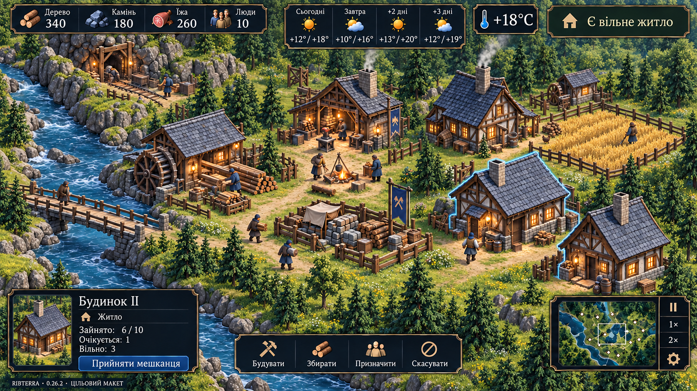

Схили: посилення каменю на наявній висоті
Проміжний крок переробки V01–V03, не художнє приймання. Знімки — прихований native D3D12; вікном користувача не керували. Рельєф і ресурси не редаговані. Збігаються задекларовані seed, камера, масштаб, контент і версії генератора. Звичайні кадри не містять повного per-capture checksum/погодного паспорта, тому це візуальне порівняння зі вказаними обмеженнями, а не pixel-perfect доказ однакового стану.
Перевірки, ідентичність збірок і залишкові проблеми · Попередні проходи
Seed 1337: до / після
 До: висота вже була, кам’яна поверхня губилася під травою.
До: висота вже була, кам’яна поверхня губилася під травою.
 Після: домінантний камінь на крутому схилі. Рівнина біля табору збережена. Маса каменю поки надто однорідна.
Після: домінантний камінь на крутому схилі. Рівнина біля табору збережена. Маса каменю поки надто однорідна.
Порівняння на одному кадрі
Інша геометрія та зимовий стан
 Seed 70421: помірніший ефект, відповідно до його реального схилу.
Seed 70421: помірніший ефект, відповідно до його реального схилу.
 Зима, постановочне поселення: камінь не стирає сніговий покрив. Дерева, кущі й будівлі не переміщені заради кадру.
Зима, постановочне поселення: камінь не стирає сніговий покрив. Дерева, кущі й будівлі не переміщені заради кадру.
Ціль та поточне поселення

Концепт: рельєф зі згрупованими скельними масами та виразним краєм.
 Поточний рендер: відповідність ще не досягнута. Відрізняються композиція, щільність, кам’яні виступи, межа розвідки та повнота HUD.
Поточний рендер: відповідність ще не досягнута. Відрізняються композиція, щільність, кам’яні виступи, межа розвідки та повнота HUD.